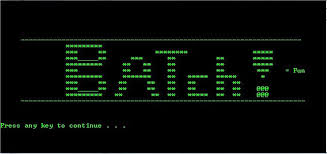

Knowledge base
Category: ALL
Deployment
Windows 7 and windows 10 services like SCCM
Linux
Linux basics

Batch
Batch basic syntax and deployment
Sysinternals
Troubleshooting with sysinternal tools
IIS
IIS basic troubleshooting